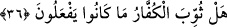

35. Koltuklar üzerinde etrafa bakarlar.
Evet yâni şimdi de onlar kâfirlere ve onların içine düştükleri kötü hallerine bakarak
onlara gülecekler.
36. Kâfirler yaptıklarının cezâsını buldular mı! (Elbette buldular.)
Bu son âyet Allah veya melekler tarafından ifâde edilmeye başlanan bir başlangıç
cümlesidir. Cümlenin başındaki soru takrir içindir. Bir başka ifâdeyle cümle içinde
vurgulanan gerçeği kabul ettirmek içindir.
“Süvvibe” şekil itibariyle di-li geçmiş zaman kalıbında ise de aslında şimdiki
zamandır. Şimdiki zaman olan bir fiilin di-li geçmiş zaman kipiyle ifâde edilmesi, bunun
mutlaka olacağına işâret etmek içindir. Arapçada “tesvib” birisine karşılık vermek
anlamınadır. Tesvib ve isâbe mücâzât anlamına gelmek üzere “kötü karşılık” için
kullanılır.
Rağıb Isfahânî’nin ifâdesine göre “isâbet” kökü, hoşlanılan şeyler için de
kullanılabilir. Şimdi bununla ilgili iki âyet: Allah şöyle buyurur: “Söyledikleri bu
sözden dolayı Allah onlara, içinde devamlı kalmak üzere zemininden ırmaklar
akan cennetleri mükâfat olarak verdi.” (Maide 5/85) Görüldüğü üzere burada
“isabet” “iyi karşılık” olarak kullanılmıştır. Bu kelime bazen de kötü karşılık anlamında
kullanılır. Nitekim şu âyet buna örnektir: “O zaman Peygamber arkanızdan sizi
çağırdığı halde siz, durmadan (savaş alanından) uzaklaşıyor, hiçkimseye dönüp
bakmıyordunuz (Allah) size keder üstüne keder verdi” (Ali İmran, 3/153) Tesvib,
Kur’an-ı Kerim’de -bu âyette olduğu gibi- sâdece kötü karşılık anlamında
kullanılmıştır.
Kamus’ta ifâde edildiğine göre tesvib, kötü veya iyi şartı olmaksızın doğrudan
doğruya karşılık verme anlamındadır. Kamus’un bu açıklaması Tâcu’l-Masâdır’daki
açıklamaya uygundur.
Buna göre âyetin mânâsı; “kâfirler dünyada iken mü’minleri alaya almalarının ve
onlara gülmelerinin cezâsını buldular mı?” şeklinde olur. Bu ifâde mü’minlerin âhirette
kâfirlere gülmelerinin onların dünyada iken kendilerine gülmelerine bir karşılık olacağı
noktasında gâyet açık ve net bir ifâdedir. Ayrıca bu âyet mü’minleri teselli etmektedir.
Çünkü durum tersine dönecek ve kâfirler gülünç hale geleceklerdir. Öte yandan bu âyet
âhirette müminlerin şanını yüceltmektedir. Zira düşmanların şanlarının düşürülmesi ve
tahkir edilmesi, dostların şanını ta’zim etme anlamına gelir. Allah Teâlâ dostlarının
düşmanlarından intikamını alır. Çünkü o kendi dostları için gazap eder. Tıpkı dişi
aslanın yavrusuna birşey gelecek diye kızıp kükremesi gibi. Gerçek korunma ve ismet
Allah’tandır. Buradan anlaşılıyor ki başkalarına gülmek, onları alaya almak, maskaralık